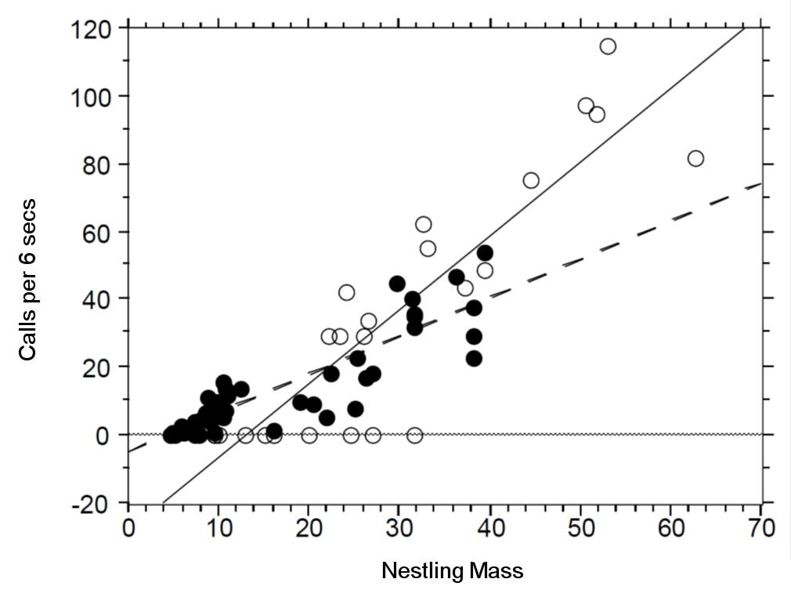

3 Generalised linear models
Slides can be downloaded from:
3.1 Motivation
In the previous workshop we have seen that linear models are a powerful modelling tool. However, we have to satisfy the following assumptions:
- A linear mean function is relevant.
- Variances are equal across all predicted values of the response (homoscedatic)
- Errors are normally distributed.
- Samples collected at random.
- Errors are independent.
If assumptions 1–3 are violated we can transform our response variable to try and fix this (power transforms, Tukey’s ladder-of-powers, Box-Cox transformation, Tukey and Mosteller’s bulging rule). However, in a lot of other cases this is either not possible (e.g binary output) or we want to explicitly model the underlying distribution (e.g count data). Instead, we can use Generalised Linear Models (GLMs) that let us change the error structure of our data. By error structure we mean the assumption placed on the residuals. In the previous simple linear regression case we assumed them to be normal (i.e \(\epsilon_i \sim \mathcal{N}(0,\sigma^2)\))
3.2 Generalised Linear Models (GLMs)
Generalised Linear Models (GLMs) have:
- A linear mean (of your making).
- A link function (like an ‘internal’ transformation).
- An error structure.
3.2.1 Link functions
A link function links your mean function to the scale of the observed data e.g.
- Response variable \(Y\) and explanatory variable(s) \(X\).
- The regression parameters are denoted using \(\beta_p\) as before.
- Linear function: \(\beta_0 + \beta_1 X\).
- \(E(Y) = g^{-1}\left(\beta_0 + \beta_1 X\right)\).
Here \(E(Y)\) denotes the expected value (i.e. mean of \(Y\)).
The function \(g(\cdot)\) is known as the link function, and \(g^{-1}(\cdot)\) denotes the inverse of \(g(\cdot)\).
The simple linear regression model we have used so far is a special cases of a GLM:
lm(height ~ weight)is equivalent to
glm(height ~ weight, family=gaussian(link=identity))Compared to lm(), the glm() function takes an additional argument called family, which specifies the error structure and link function.
The default link function for the normal (Gaussian) distribution is the identity, i.e. for mean \(\mu\) we have:
\[ \mu = \beta_0 + \beta_1 X \]
Defaults are usually good choices (shown in bold below):
| Family | Link |
|---|---|
gaussian |
identity |
binomial |
logit, probit or cloglog |
poisson |
log, identity or sqrt |
Gamma |
inverse, identity or log |
inverse.gaussian |
1/mu^2 |
quasi |
user-defined |
quasibinomial |
logit |
quasipoisson |
log |
lm and glm functions and compare their summaries.
3.2.2 Workflow
- Exploratory data analysis
- Choose suitable error term
- Choose suitable mean function (and link function)
- Fit model
- Residual checks and model fit diagnostics
- Revise model (transformations etc.)
- Model simplification if required
- Check final model
3.3 Poisson regression (for count data)
Count data are ubiquitous in the life sciences (e.g number of parasites per microlitre of blood, number of species in a particular area). These type of data are discrete and non-negative. In such cases assuming our response variable to be normally distributed is not typically sensible. The Poisson distribution lets us model count data explicitly.
Recall the simple linear regression case (i.e a GLM with a Gaussian error structure and identity link). For the sake of clarity let’s consider a single explanatory variable and omit the index \(i\) which runs from 1 to \(n\) (the total number of observations/data points):
\[ \begin{aligned} Y & = \beta_0 + \beta_1X + \epsilon \\ \epsilon & \sim \mathcal{N}(0, \sigma^2) \end{aligned} \] Which can be re-written as:
\[ \begin{aligned} Y & \sim \mathcal{N}(\mu, \sigma^2) \\ \mu & = \beta_0 + \beta_1X \end{aligned} \] The mean function is unconstrained, i.e the value of \(\beta_0 + \beta_1X\) can range from \(-\infty\) to \(+\infty\). If we want to model count data we therefore want to constrain this mean to be positive. Mathematically we can do this by taking the logarithm of the mean (it is by no coincidence that log transforms are very popular to normalise response variables). We then assume our count data to be Poisson distributed (a discrete, non-negative distribution), to obtain our Poisson regression model (to be consistent with the statistics literature we will rename \(\mu\) to \(\lambda\)):
\[ \begin{aligned} Y & \sim \mathcal{Pois}(\lambda) \\ \log{\lambda} & = \beta_0 + \beta_1X \end{aligned} \] Note: we are still fitting straight lines (hyperplanes in higher dimensions) through our data! The only difference is that it is linear for the log transformed observations.
Where’s the variance parameter in this case (i.e anagolous to \(\sigma^2\))? The Poisson distribution has the following characteristics:
- Discrete variable, defined on the range \(0, 1, \dots, \infty\).
- A single rate parameter \(\lambda\), where \(\lambda > 0\).
- Mean = \(\lambda\)
- Variance = \(\lambda\)
So for the Poisson regression case we assume that the mean and variance are the same. Hence, as the mean increases, the variance increases also (heteroscedascity). This may or may not be a sensible assumption so watch out!4
Recall the link function and the rules of logarithms (if \(\log{\lambda} = k\), then \(\lambda = e^k\)):
\[ \begin{aligned} \log{\lambda} & = \beta_0 + \beta_1X \\ \lambda & = e^{\beta_0 + \beta_1X } \end{aligned} \] Thus we are effectively modelling the observed counts (on the original scale) using an exponential mean function.
3.4 Example: Cuckoos

In a study by Kilner et al. (1999), the authors studied the begging rate of nestlings in relation to total mass of the brood of reed warbler chicks and cuckoo chicks. The question of interest is:
How does nestling mass affect begging rates between the different species?
Download the data file from here and save it to your working directory.5
cuckoo <- read.csv("cuckoo.csv", header=T)head(cuckoo)## Mass Beg Species
## 1 9.637522 0 Cuckoo
## 2 10.229151 0 Cuckoo
## 3 13.103706 0 Cuckoo
## 4 15.217391 0 Cuckoo
## 5 16.231884 0 Cuckoo
## 6 20.120773 0 CuckooThe data columns are:
- Mass: nestling mass of chick in grams
- Beg: begging calls per 6 secs
- Species: Warbler or Cuckoo
ggplot(cuckoo, aes(x=Mass, y=Beg, colour=Species)) + geom_point()There seem to be a relationship between mass and begging calls and it could be different between species. It is tempting to fit a linear model to this data. In fact, this is what the authors of the original paper did; reed warbler chicks (solid circles, dashed fitted line) and cuckoo chick (open circles, solid fitted line):

This model is inadequate. It is predicting negative begging calls within the range of the observed data, which clearly does not make any sense.
Let us display the model diagnostics plots for this linear model.
## Fit model
## We add an interaction term here, we will talk about this later on
fit <- lm(Beg ~ Mass*Species, data=cuckoo) par(mfrow=c(2, 2))
plot(fit, pch=19, col='darkgrey')The residuals plot depicts a “funnelling” effect, highlighting that the model assumptions are violated. We should therefore try a different model structure.
The response variable in this case is a classic count data: discrete and bounded below by zero (i.e we cannot have negative counts). We will therefore try a Poisson model using a log link function for the mean:
\[ \log{\lambda} = \beta_0 + \beta_1 M_i + \beta_2 S_i + \beta_3 M_i S_i \]
where \(M_i\) is nestling mass and \(S_i\) a dummy variable (refer to Categorical explanatory variables):
\[ S_i = \left\{\begin{array}{ll} 1 & \mbox{if $i$ is warbler},\\ 0 & \mbox{otherwise}. \end{array} \right. \]
The term \(M_iS_i\) is an interaction term. Think of this as an additional explanatory variable in our model. Effectively it lets us have different slopes for different species (without an interaction term we assume that both species have the same slope for the relationship between begging rate and mass, and only the intercept differ).
The mean regression lines for the two species look like this:
- Cuckoo (\(S_i=0\))
\[ \begin{aligned} \log{\lambda} & = \beta_0 + \beta_1 M_i + (\beta_2 \times 0) + (\beta_3 \times M_i \times 0)\\ \log{\lambda} & = \beta_0 + \beta_1 M_i \end{aligned} \]
Intercept = \(\beta_0\), Gradient = \(\beta_1\)
Warbler (\(S_i=1\))
\[ \begin{aligned} \log{\lambda} & = \beta_0 + \beta_1 M_i + (\beta_2 \times 1) + (\beta_3 \times M_i \times 1)\\ \log{\lambda} & = \beta_0 + \beta_1 M_i + \beta_2 + \beta_3M_i\\ \log{\lambda} & = (\beta_0+\beta_2) + (\beta_1+\beta_3) M_i \end{aligned} \]
- Intercept = \(\beta_0 + \beta_2\), Gradient = \(\beta_1 + \beta_3\)
To specify an interaction term in R we use the * operator.
- Model with no interaction term: \(\log{\lambda} = \beta_0 + \beta_1 M_i + \beta_2 S_i\)
glm(Beg ~ Mass + Species, data=cuckoo, family=poisson(link=log))- Model with interaction term: \(\log{\lambda} = \beta_0 + \beta_1 M_i + \beta_2 S_i + \beta_3 M_i S_i\)
glm(Beg ~ Mass*Species, data=cuckoo, family=poisson(link=log))Fit the model with the interaction term in R:
fit <- glm(Beg ~ Mass*Species, data=cuckoo, family=poisson(link=log))
summary(fit)##
## Call:
## glm(formula = Beg ~ Mass * Species, family = poisson(link = log),
## data = cuckoo)
##
## Deviance Residuals:
## Min 1Q Median 3Q Max
## -7.4570 -3.0504 -0.0006 1.9389 5.2139
##
## Coefficients:
## Estimate Std. Error z value Pr(>|z|)
## (Intercept) 1.589861 0.104531 15.209 < 2e-16 ***
## Mass 0.054736 0.002298 23.820 < 2e-16 ***
## SpeciesWarbler -0.535546 0.161304 -3.320 0.000900 ***
## Mass:SpeciesWarbler 0.015822 0.004662 3.394 0.000689 ***
## ---
## Signif. codes: 0 '***' 0.001 '**' 0.01 '*' 0.05 '.' 0.1 ' ' 1
##
## (Dispersion parameter for poisson family taken to be 1)
##
## Null deviance: 1730.04 on 57 degrees of freedom
## Residual deviance: 562.08 on 54 degrees of freedom
## AIC: 784.81
##
## Number of Fisher Scoring iterations: 5For the sake of clarity here is the mapping of the \(\beta_p\) regression coefficients used above and those returned by R.
(Intercept)= \(\beta_0\) (intercept for the reference/baseline species, cuckoo in this case)Mass= \(\beta_1\) (slope for the baseline species)SpeciesWarbler= \(\beta_2\) (the increase/decrease in intercept relative to the baseline species)Mass:SpeciesWarbler= \(\beta_3\) (the increase/decrease in slope relative to the baseline species)
Plot the mean regression line for each species:
newdata <- expand.grid(Mass=seq(min(cuckoo$Mass), max(cuckoo$Mass), length.out=200),
Species=levels(cuckoo$Species))
newdata <- cbind(newdata, Beg=predict(fit, newdata, type='response'))
ggplot(mapping=aes(x=Mass, y=Beg, colour=Species)) + geom_point(data=cuckoo) +
geom_line(data=newdata)We get an exponential curve in the scale of the original data, which is the same as a straight line in the log-scaled version of the data.
3.5 Practical 4 - Species richness
A long-term agricultural experiment had 90 grassland plots, each 25m x 25m, differing in biomass, soil pH and species richness (the count of species in the whole plot). It is well known that species richness declines with increasing biomass, but the question addressed here is whether the slope of that relationship differs with soil pH (i.e there’s an interaction effect). The plots were classified according to a 3-level factor as high, medium or low pH with 30 plots in each level.
The response variable is the count of species (Species), so a GLM with Poisson errors is a sensible choice. The continuous explanatory variable is long-term average biomass measured in June (Biomass), and the categorical explanatory variable is soil pH (pH).
Download the data from here
df <- read.csv("species.csv", header=T)head(df)## pH Biomass Species
## 1 high 0.4692972 30
## 2 high 1.7308704 39
## 3 high 2.0897785 44
## 4 high 3.9257871 35
## 5 high 4.3667927 25
## 6 high 5.4819747 29ggplot(df, aes(x=Biomass, y=Species, colour=pH)) + geom_point()- Fit a simple linear regression model (i.e assuming residuals to be normally distributed) with
Speciesas response variable andBiomassandpHas explanatory variables. Assume a different slope for eachpHlevel. Display a summary of the fit. - Plot the mean regression lines for all three
pHlevels (low, medium, high) - As
Biomasstends to increase what is the expected number of species found in the grassland for the different pH levels? Is this biologically plausible? - Repeat 1–3 this time fitting a Poisson regression model.

3.6 Logistic regression (for binary data)
So far we have only considered continuous and discrete data as response variables. What if our response is a categorical variable (e.g passing or failing an exam, voting yes or no in a referendum, whether an egg has successfully fledged or been predated)?
We can model the probability \(p\) of being in a particular class as a function of other explanatory variables. Here we will focus on variables with two levels (e.g dead/alive). 6. These type of binary data are assumed to follow a Bernoulli distribution which has the following characteristics:
\[ Y \sim \mathcal{Bern}(p) \]
- Binary variable, taking the values 0 or 1 (yes/no, pass/fail).
- A probability parameter \(p\), where \(0 < p < 1\).
- Mean = \(p\)
- Variance = \(p(1 - p)\)
Let us now place the Gaussian (simple linear regression), Poisson and logistic models next to each other:
\[ \begin{aligned} Y & \sim \mathcal{N}(\mu, \sigma^2) &&& Y \sim \mathcal{Pois}(\lambda) &&& Y \sim \mathcal{Bern}(p)\\ \mu & = \beta_0 + \beta_1X &&& \log{\lambda} = \beta_0 + \beta_1X &&& ?? = \beta_0 + \beta_1X \end{aligned} \]
Now we need to fill in the ?? with the appropriate term. Similar to the Poisson regression case, we cannot simply model the probabiliy as \(p = \beta_0 + \beta_1X\), because \(p\) cannot be negative. \(\log{p} = \beta_0 + \beta_1X\) won’t work either, because \(p\) cannot be greater than 1. Instead we model the log odds \(\log\left(\frac{p}{1 - p}\right)\) as a linear function. So our logistic regression model looks like this:
\[ \begin{aligned} Y & \sim \mathcal{Bern}(p)\\ \log\left(\frac{p}{1 - p}\right) & = \beta_0 + \beta_1 X \end{aligned} \]
Again, note that we are still “only” fitting straight lines through our data, but this time in the log odds space. As a shorthand notation we write \(\log\left(\frac{p}{1 - p}\right) = \text{logit}(p) = \beta_0 + \beta_1 X\).
We can also re-arrange the above equation so that we get an expression for \(p\)
\[ p = \frac{e^{\beta_0 + \beta_1 X}}{1 + e^{\beta_0 + \beta_1 X}} \]
Note how \(p\) can only vary between 0 and 1.
To implement the logistic regression model in R, we choose family=binomial(link=logit) (the Bernoulli distribution is a special case of the Binomial distribution when the number of trials is 1).
glm(response ~ explanatory, family=binomial(link=logit))3.7 Example: 1992 US election survey
Voters were asked if they preferred George Bush (Republican) or Bill Clinton (Democrat) (voters who preferred other candidates were excluded). The respondent’s income was characterised on a 5-point scale (1 - poor to 5 - rich). The question of interest in this case is:
Do voters with higher incomes prefer conservative7 candidates?
Download the data file from here and save it to your working directory.
USA <- read.csv("US1992.csv", header=T)head(USA)## Vote Income
## 1 George Bush 4
## 2 George Bush 2
## 3 Bill Clinton 1
## 4 George Bush 2
## 5 Bill Clinton 3
## 6 Bill Clinton 4The data columns are:
- Vote: Whether voter preferred Bill Clinton (Democrat) or George Bush (Republican)
- Income: 1 - poor to 5 - rich (based on quantiles of earnings in the US)
ggplot(USA, aes(x=Income)) + geom_bar(aes(fill=Vote))It does look like people with low income are more likely to prefer Bill Clinton over George Bush. Let us fit a logistic regression model to dig deeper into this. Note that by default R will use the order of the levels to define which one is class “0” (fail) and which one is class “1” (success).
levels(USA$Vote) # class 0, class 1## [1] "Bill Clinton" "George Bush"So in this case \(p\) will represent the probability of preferring George Bush. The probability of preferring Bill Clinton is simply \(1-p\) because we are only considering two options.
fit <- glm(Vote ~ Income, data=USA, family=binomial(link=logit))
summary(fit)##
## Call:
## glm(formula = Vote ~ Income, family = binomial(link = logit),
## data = USA)
##
## Deviance Residuals:
## Min 1Q Median 3Q Max
## -1.2699 -1.0162 -0.8998 1.2152 1.6199
##
## Coefficients:
## Estimate Std. Error z value Pr(>|z|)
## (Intercept) -1.3017 0.1828 -7.122 1.06e-12 ***
## Income 0.3033 0.0551 5.505 3.69e-08 ***
## ---
## Signif. codes: 0 '***' 0.001 '**' 0.01 '*' 0.05 '.' 0.1 ' ' 1
##
## (Dispersion parameter for binomial family taken to be 1)
##
## Null deviance: 1655.0 on 1221 degrees of freedom
## Residual deviance: 1623.5 on 1220 degrees of freedom
## AIC: 1627.5
##
## Number of Fisher Scoring iterations: 4Recall that we are fitting the model:
\[ \begin{aligned} Y & \sim \mathcal{Bern}(p)\\ \log\left(\frac{p}{1 - p}\right) & = \beta_0 + \beta_1 X \end{aligned} \]
(Intercept)= \(\beta_0\) = -1.3Income= \(\beta_1\) = 0.303
It is common to interpret variables according to some central tendency e.g at the central income category (i.e X=3):
\[ \begin{aligned} P(\mbox{Republican vote at}~X = 3) &= \mbox{logit}^{-1}\left(-1.3 + 0.3 \times 3\right)\\ &= \frac{e^{-1.3 + 0.3 \times 3}}{1 + e^{-1.3 + 0.3 \times 3}}\\ &= 0.4. \end{aligned} \] We can also check for \(X=4\) and \(X=5\) (rich)
\[ \begin{aligned} P(\mbox{Republican vote at}~X = 4) &= \mbox{logit}^{-1}\left(-1.3 + 0.3 \times 4\right)\\ &= \frac{e^{-1.3 + 0.3 \times 4}}{1 + e^{-1.3 + 0.3 \times 4}}\\ &= 0.48. \end{aligned} \]
\[ \begin{aligned} P(\mbox{Republican vote at}~X = 5) &= \mbox{logit}^{-1}\left(-1.3 + 0.3 \times 5\right)\\ &= \frac{e^{-1.3 + 0.3 \times 5}}{1 + e^{-1.3 + 0.3 \times 5}}\\ &= 0.55. \end{aligned} \]
So there is a tendency for voters with higher incomes to prefer Republicans over Democrats.
An increase of 1 unit on the income scale results in a positive difference of 0.3 on the logit scale in support of Bush.
A convenient way to express this on the probability scale is to consider what effect a 1 unit change has close to the central value, e.g. between \(X = 3\) and \(X = 2\)
\[ \begin{aligned} & \mbox{logit}^{-1}\left(-1.3 + 0.3 \times 3\right) \\ &~~~~~~~~- \mbox{logit}^{-1}\left(-1.3 + 0.3 \times 2\right) = 0.07. \end{aligned} \]
Hence an increase in income of 1 unit around this central value results in a 7% increase in the probability of supporting Bush.
3.7.1 The ‘divide-by-four’ rule
A useful rule-of-thumb can be given by the ‘divide-by-four’ rule.
That is, the maximum difference in \(P(Y = 1)\) (P(Republican vote) in our example) corresponding to a unit difference in \(X\) is given by \(\beta / 4\).
In this example, the maximum difference in P(Republican vote) corresponding to a unit difference in income is given by \(0.3 / 4 = 0.076\) (or a 7.6% change).
3.7.2 Odds ratios
An common interpretation of logistic regression coefficients is in terms of odds ratios.
Odds:
\[ \frac{P(\mbox{event happens})}{P(\mbox{event does not happen})} \]
Probability of a voter in income category 3 voting Republican is
\[ \begin{aligned} P(\mbox{Republican vote for}~X = 3) &= p_{X = 3}\\ &= \mbox{logit}^{-1}\left(-1.3 + 0.3 \times 3\right)\\ &= 0.4. \end{aligned} \]
Odds: \[\frac{p_{X = 3}}{1 - p_{X = 3}}\]
Odds of a voter in income category 3 voting Republican is 0.4 / 0.6 = 0.67.
Odds ratio:
\[ \frac{\mbox{odds in one group}}{\mbox{odds in another group}} \]
e.g. odds ratio for voters in income category 3 voting Republican compared to voters in income category 2 is:
\[ \frac{\mbox{odds of voting Republican when}~X = 3}{\mbox{odds of voting Republican when}~X = 2} = \frac{\frac{p_{X = 3}}{1 - p_{X = 3}}}{\frac{p_{X = 2}}{1 - p_{X = 2}}}. \]
Take logs:
\[ \begin{aligned} \log\left(\frac{\frac{p_{X = 3}}{1 - p_{X = 3}}}{\frac{p_{X = 2}}{1 - p_{X = 2}}}\right) &= \log\left(\frac{p_{X = 3}}{1 - p_{X = 3}}\right) - \log\left(\frac{p_{X = 2}}{1 - p_{X = 2}}\right)\\ &= \beta_0 + \left(\beta_1 \cdot 3\right) - \beta_0 - \left(\beta_1 \cdot 2\right)\\ &= \beta_1 (3 - 2)\\ &= \beta_1 \end{aligned} \]
So \(\beta_1\) is the log-odds ratio for voting Republican per unit increase in income, and \(e^{\beta_1}\) is the odds ratio. This measure does not rely on the level of income
In this example the odds ratio is \(e^{0.3}\) = 1.35.
Hence the odds of voting Republican increase by a factor of 1.35 per unit increase in income.
Odds ratios are a tricky thing to understand, and many people (including me) find them unintuitive.
Are useful in case-control studies, where the prevalence of an outcome is unknown.
3.7.3 Model diagnostics
Once we have fitted a regression model, we can use it to predict the mean probability of success for given individual (fitted values).
We can then generate residual plots as before:
plot(fit, which = c(1, 5))Alternative residual plots are possible to generate using the binnedplot() function in the arm package in R:
USA$Vote <- ifelse(USA$Vote %in% 'Bill Clinton', 0, 1) # change to 0/1 for plot purposes
library(arm)
plot(fit, which = 1)
binnedplot(predict(fit, type = "response"),
USA$Vote - predict(fit, type = "response"))3.8 Practical 5 - Wine
The analysis determined the quantities of 13 constituents found in each of two types of wine. 8
Download the data file from here and save it to your working directory.
wine <- read.csv("wine.csv", header=T)head(wine)## WineType Alcohol MalicAcid Ash AlcalinityAsh Magnesium TotalPhenols
## 1 A 14.23 1.71 2.43 15.6 127 2.80
## 2 A 13.20 1.78 2.14 11.2 100 2.65
## 3 A 13.16 2.36 2.67 18.6 101 2.80
## 4 A 14.37 1.95 2.50 16.8 113 3.85
## 5 A 13.24 2.59 2.87 21.0 118 2.80
## 6 A 14.20 1.76 2.45 15.2 112 3.27
## Flavanoids NonflavanoidPhenols Proanthocyanins ColourIntensity Hue
## 1 3.06 0.28 2.29 5.64 1.04
## 2 2.76 0.26 1.28 4.38 1.05
## 3 3.24 0.30 2.81 5.68 1.03
## 4 3.49 0.24 2.18 7.80 0.86
## 5 2.69 0.39 1.82 4.32 1.04
## 6 3.39 0.34 1.97 6.75 1.05
## OD280_OD315 Proline
## 1 3.92 1065
## 2 3.40 1050
## 3 3.17 1185
## 4 3.45 1480
## 5 2.93 735
## 6 2.85 1450The data columns are self-explanatory, but for the purpose of this practical we will just focus on Alcohol content and TotalPhenols (a class of chemical compound). The question of interest is:
Can we differentiate between the two types of wine using
AlcoholandTotalPhenols?
- Plot a scatterplot of
AlcoholvsTotalPhenolsand colour data points byWineType
- Fit a logistic regression model with
WineTypeas response variable andAlcoholandTotalPhenolsas explanatory variables. Display a summary of the fit.
- What is the probability that a wine with alcohol content of 12.5% and total phenols of 2.5 units, is of
WineTypeB? Hint: Use theinvlogitfunction already available in thearmpackage (install.packages('arm'))
- Plot the mean regression lines on the probability scale for varying values of
Alcoholbut fixed values ofTotalPhenolsof 1.5, 2.5 and 3.5 (i.e a plot withAlcoholon the x-axis and predicted probability ofWineTypeB on the y-axis for the three cases ofTotalPhenols).
3.9 Summary
GLMs are powerful and flexible.
They can be used to fit a wide variety of data types.
Model checking becomes trickier.
Extensions include:
- mixed models;
- survival models;
- generalised additive models (GAMs).
the negative binomial model and others can cope with cases where this assumption is not satisfied↩
this dataset was obtained by digitising the plot that appear in the original paper, hence you will not be able to fully reproduce the results of the original paper, it is only used here for illustrative purposes↩
the multinomial logistic regression model generalises logistic regression to multiclass problems↩
i.e. Republican↩
the full dataset contains three types of wine and is available here↩